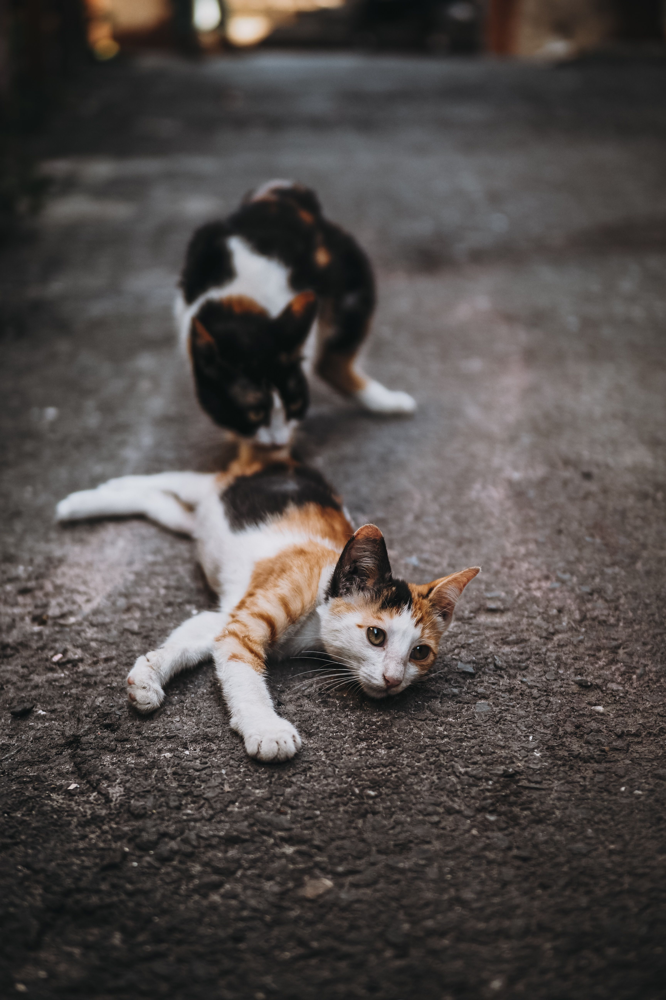

Leia antes de ir ao forúm de adoção dos bixinhos

O forúm funciona como um blog, pessoas que resgatam animais, ajudam animais postam sua rotina
Existem 3 categorias no blog, adoção, ajuda e postagens diárias na adoção as pessoas postam sobre os animais que estão disponivéis para adotar, e em ajuda as postagem servem para arrecadar dinheiro para ajudar nos custos de ração de cada pessoa que pede ajuda
Contém as regras para o uso do forúm
Para colocar um animal a adoção, tenha as condições de saúde do animalzinho, todas as doenças devem ser listadas, é importante que a vacina de raiva esteja tomada e que o animalzinho resgatado esteja de banho tomado e bem cuidado até ser adotado
Para pedir ajuda financeira para ajudar os animais é necessário comprovante e videos legítimos, além de que o local deve ser verificado evitando golpes
Nosso site é apenas para animais domesticos, está proibida adoção de animais silvestres principalmente não legalizados, além de que vende de animais é proibido apenas permitimos a adoção consciente no nosso site